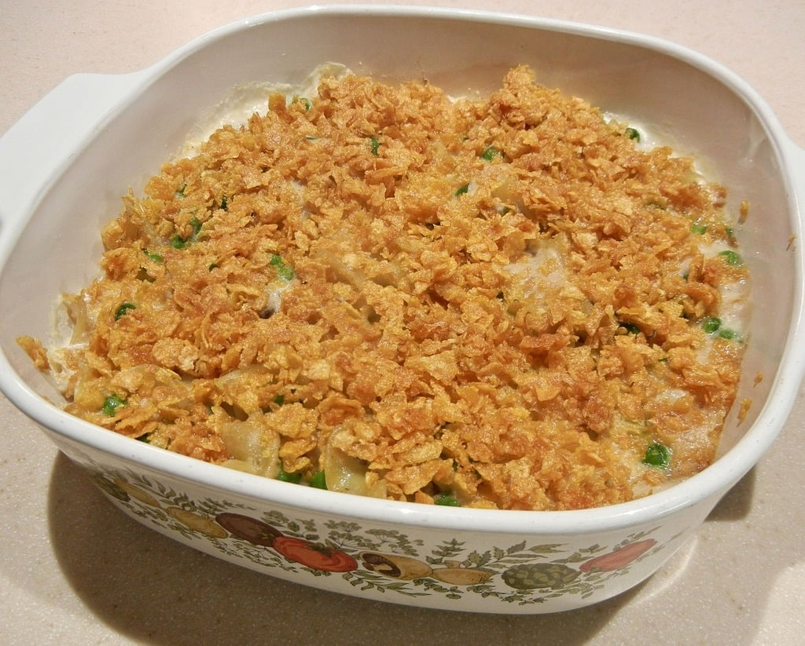

Home
Tuna Casserole

Only requiring macaroni, tuna, cream of chicken soup and cheese, tuna pasta casserole is a surpisingly simple and fulfilling dish to create.
This recipe produces 8 servings, but even if you don't have 7 people to share it with, this dish makes for great leftovers. You can even
garnish the dish with herbs or onions at your discretion!
Ingredients
- 3 cups of cooked macaroni
- 5 ounces of tuna
- 10.5 ounces of condensed cream of chicken soup
- 1 cup of shredded your favourite cheese, cheddar is my personal choice
- Garnish of your choice (e.g. chopped onions or basil)
Directions
- Preheat your oven to 175 degrees celcius (350 degrees fahrenheit).
- Mix the cooked macaroni, tuna, and condensed soup together into your baking dish. Grate your choice of cheese and sprinkle it evenly over the casserole.
- Bake the tuna casserole inside the oven for about 25 minutes, you'll know it's ready when the dish is bubbly. You may wish to add onions to the dish for the last 5 minutes, but this is entirely optional
- Apply garnish and voila! Your tuna casserole is ready to be served!
Remember to let your food cool down to room temperature before refrigerating!